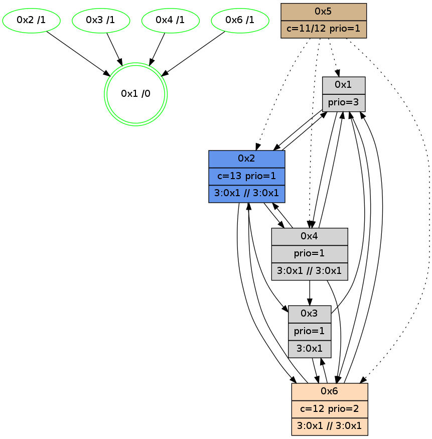

>> << IDX [start] -100 -25 -5 +0 +5 +25 +100 [1065.07177114]
 Previous packets
----------------------------------------------------------------------
1060.150687 beacon01(adaf) #0 coord=01,02,05,03,04,06 cycle=432.0ms assoc
-- color-indic=1 64 75 58
1060.160648 beacon02(adaf) #0 coord=01,02,05,03,04,06 cycle=432.0ms assoc 64 24 a7
1060.170649 beacon05(adaf) #0 coord=01,02,05,03,04,06 cycle=432.0ms assoc 64 82 8d
1060.180650 beacon03(adaf) #0 coord=01,02,05,03,04,06 cycle=432.0ms assoc 64 1e a9
1060.190649 beacon04(adaf) #0 coord=01,02,05,03,04,06 cycle=432.0ms assoc 64 b8 83
1060.200649 beacon06(adaf) #0 coord=01,02,05,03,04,06 cycle=432.0ms assoc 64 cc 9f
1060.212225 [STC(4)->1 #0.171 new-neigh,tree-change,inconsistent-stability,stable,to-color d=1]
1060.214323 [Hello(6): seq=780 sym=4,2,1,3 sysInfo=hasWarning stat=4:2,2,11,2/2:10,13,2,0/1:6,9,10,1/3:0,7,10,10]
1060.216304 [Hello(3): seq=865 sym=6,2,1,4 sysInfo=hasWarning stat=6:10,12,12,4/2:8,11,2,0/1:7,9,9,1/4:11,0,4,1]
1060.218490 [Hello(1): seq=767 sym=2,4,6 sysInfo=hasWarning,coloring-mode-on,ColoringModeRequestCalled stat=2:7,5,1,0/4:3,8,2,1/6:14,12,9,5]
1060.221448 [Hello(2): seq=1354 sym=3,6,1,4 sysInfo=hasWarning stat=3:4,1,2,1/6:12,13,6,4/1:15,12,0,0/4:1,4,1,0]
1060.223734 [STC(3)->1 #0.171 new-neigh,tree-change,inconsistent-stability,stable,to-color d=1]
1060.228746 [STC(6)->1 #0.171 new-neigh,tree-change,inconsistent-stability,stable,to-color d=1]
1060.231026 [Color(6) seq=252 @0:0 color=12 prio=2 c=7,d,e;1,4,6,8,9,b]
----------------------------------------------------------------------
1060.642799 beacon01(adaf) #0 coord=01,02,05,03,04,06 cycle=432.0ms assoc
-- color-indic=1 64 b1 37
1060.652759 beacon02(adaf) #0 coord=01,02,05,03,04,06 cycle=432.0ms assoc 64 e0 c8
1060.662761 beacon05(adaf) #0 coord=01,02,05,03,04,06 cycle=432.0ms assoc 64 46 e2
1060.672760 beacon03(adaf) #0 coord=01,02,05,03,04,06 cycle=432.0ms assoc 64 da c6
1060.682762 beacon04(adaf) #0 coord=01,02,05,03,04,06 cycle=432.0ms assoc 64 7c ec
1060.692761 beacon06(adaf) #0 coord=01,02,05,03,04,06 cycle=432.0ms assoc 64 08 f0
1060.705258 [Hello(4): seq=867 sym=2,1,6,3 sysInfo=hasWarning stat=2:0,0,0,0/1:1,3,14,0/6:7,12,3,6/3:9,12,10,3]
1060.708391 [Color(4) seq=148 @0:0 prio=1 c=7,c;1,4,6,8,9,b,d,e]
1060.710725 [Color(3) seq=182 @0:0 prio=1 >1.@4 c=7,c,d;1,4,6,8,9,b,e]
1060.713025 [Color(1) seq=294 @0:0 color=7 prio=2 c=1,4,6,8,9,b,c,d;0,2,3,5,a,e]
1060.714577 [Color(2) seq=253 @0:0 color=13 prio=1 c=7,c,e;1,4,6,8,9,b]
----------------------------------------------------------------------
1061.134908 beacon01(adaf) #0 coord=01,02,05,03,04,06 cycle=432.0ms assoc
-- color-indic=1 64 ef 56
1061.144871 beacon02(adaf) #0 coord=01,02,05,03,04,06 cycle=432.0ms assoc 64 be a9
1061.154870 beacon05(adaf) #0 coord=01,02,05,03,04,06 cycle=432.0ms assoc 64 18 83
1061.164870 beacon03(adaf) #0 coord=01,02,05,03,04,06 cycle=432.0ms assoc 64 84 a7
1061.174871 beacon04(adaf) #0 coord=01,02,05,03,04,06 cycle=432.0ms assoc 64 22 8d
1061.184873 beacon06(adaf) #0 coord=01,02,05,03,04,06 cycle=432.0ms assoc 64 56 91
1061.199269 [Hello(6): seq=781 sym=4,2,1,3 sysInfo=hasWarning stat=4:2,3,12,2/2:10,14,2,0/1:6,10,10,1/3:0,8,10,10]
1061.202412 [Color(6) seq=253 @0:0 color=12 prio=2 c=7,d,e;1,4,6,8,9,b]
1061.209753 [Hello(1): seq=768 sym=2,4,6 sysInfo=hasWarning,coloring-mode-on,ColoringModeRequestCalled stat=2:8,6,1,0/4:3,8,2,1/6:14,13,10,5]
----------------------------------------------------------------------
1061.627016 beacon01(adaf) #0 coord=01,02,05,03,04,06 cycle=432.0ms assoc
-- color-indic=1 64 2b 39
1061.636976 beacon02(adaf) #0 coord=01,02,05,03,04,06 cycle=432.0ms assoc 64 7a c6
1061.646977 beacon05(adaf) #0 coord=01,02,05,03,04,06 cycle=432.0ms assoc 64 dc ec
1061.656977 beacon03(adaf) #0 coord=01,02,05,03,04,06 cycle=432.0ms assoc 64 40 c8
1061.666978 beacon04(adaf) #0 coord=01,02,05,03,04,06 cycle=432.0ms assoc 64 e6 e2
1061.676979 beacon06(adaf) #0 coord=01,02,05,03,04,06 cycle=432.0ms assoc 64 92 fe
1061.689483 [Hello(4): seq=868 sym=2,1,6,3 sysInfo=hasWarning stat=2:0,1,0,0/1:2,4,14,0/6:8,13,3,6/3:10,13,10,3]
1061.691357 [Color(1) seq=295 @0:0 color=7 prio=2 c=1,4,6,8,9,b,c,d;0,2,3,5,a,e]
1061.693418 [Color(2) seq=254 @0:0 color=13 prio=1 c=7,c,e;1,4,6,8,9,b]
1061.698004 [Color(4) seq=149 @0:0 prio=1 c=7,c;1,4,6,8,9,b,d,e]
----------------------------------------------------------------------
1062.119124 beacon01(adaf) #0 coord=01,02,05,03,04,06 cycle=432.0ms assoc
-- color-indic=1 64 67 89
1062.129085 beacon02(adaf) #0 coord=01,02,05,03,04,06 cycle=432.0ms assoc 64 36 76
1062.139085 beacon05(adaf) #0 coord=01,02,05,03,04,06 cycle=432.0ms assoc 64 90 5c
1062.149085 beacon03(adaf) #0 coord=01,02,05,03,04,06 cycle=432.0ms assoc 64 0c 78
1062.159086 beacon04(adaf) #0 coord=01,02,05,03,04,06 cycle=432.0ms assoc 64 aa 52
1062.169088 beacon06(adaf) #0 coord=01,02,05,03,04,06 cycle=432.0ms assoc 64 de 4e
1062.180477 [Hello(1): seq=769 sym=2,4,6 sysInfo=hasWarning,coloring-mode-on,ColoringModeRequestCalled stat=2:8,7,1,0/4:3,9,2,1/6:14,13,10,5]
1062.183014 [Hello(6): seq=782 sym=4,2,1,3 sysInfo=hasWarning stat=4:2,4,12,2/2:10,15,2,0/1:7,11,10,1/3:1,8,10,10]
1062.186172 [Color(6) seq=254 @0:0 color=12 prio=2 c=7,d,e;1,4,6,8,9,b]
1062.196809 [STC(1) #0.172 new-neigh,tree-change,inconsistent-stability,stable,to-color d=0]
----------------------------------------------------------------------
1062.611233 beacon01(adaf) #0 coord=01,02,05,03,04,06 cycle=432.0ms assoc
-- color-indic=1 64 a3 e6
1062.621194 beacon02(adaf) #0 coord=01,02,05,03,04,06 cycle=432.0ms assoc 64 f2 19
1062.631195 beacon05(adaf) #0 coord=01,02,05,03,04,06 cycle=432.0ms assoc 64 54 33
1062.641195 beacon03(adaf) #0 coord=01,02,05,03,04,06 cycle=432.0ms assoc 64 c8 17
1062.651195 beacon04(adaf) #0 coord=01,02,05,03,04,06 cycle=432.0ms assoc 64 6e 3d
1062.661196 beacon06(adaf) #0 coord=01,02,05,03,04,06 cycle=432.0ms assoc 64 1a 21
1062.672803 [STC(6)->1 #0.172 new-neigh,tree-change,inconsistent-stability,stable,to-color d=1]
1062.679779 [STC(4)->1 #0.172 new-neigh,tree-change,inconsistent-stability,stable,to-color d=1]
1062.682392 [Color(4) seq=150 @0:0 prio=1 c=7,c;1,4,6,8,9,b,d,e]
----------------------------------------------------------------------
1063.103341 beacon01(adaf) #0 coord=01,02,05,03,04,06 cycle=432.0ms assoc
-- color-indic=1 64 ee e1
1063.113303 beacon02(adaf) #0 coord=01,02,05,03,04,06 cycle=432.0ms assoc 64 bf 1e
1063.123303 beacon05(adaf) #0 coord=01,02,05,03,04,06 cycle=432.0ms assoc 64 19 34
1063.133303 beacon03(adaf) #0 coord=01,02,05,03,04,06 cycle=432.0ms assoc 64 85 10
1063.143303 beacon04(adaf) #0 coord=01,02,05,03,04,06 cycle=432.0ms assoc 64 23 3a
1063.153303 beacon06(adaf) #0 coord=01,02,05,03,04,06 cycle=432.0ms assoc 64 57 26
1063.167737 [Hello(6): seq=783 sym=4,2,1,3 sysInfo=hasWarning stat=4:2,5,13,2/2:10,15,2,0/1:8,11,11,1/3:2,9,11,10]
1063.169804 [Hello(1): seq=770 sym=2,4,6 sysInfo=hasWarning,coloring-mode-on,ColoringModeRequestCalled stat=2:8,8,2,0/4:3,10,3,1/6:14,13,11,5]
1063.172603 [Color(6) seq=255 @0:0 color=12 prio=2 c=7,d,e;1,4,6,8,9,b]
1063.175822 [Color(1) seq=296 @0:0 prio=3 c=d;7,c,e]
----------------------------------------------------------------------
1063.595449 beacon01(adaf) #0 coord=01,02,05,03,04,06 cycle=432.0ms assoc
-- color-indic=1 64 2a 8e
1063.605409 beacon02(adaf) #0 coord=01,02,05,03,04,06 cycle=432.0ms assoc 64 7b 71
1063.615411 beacon05(adaf) #0 coord=01,02,05,03,04,06 cycle=432.0ms assoc 64 dd 5b
1063.625409 beacon03(adaf) #0 coord=01,02,05,03,04,06 cycle=432.0ms assoc 64 41 7f
1063.635411 beacon04(adaf) #0 coord=01,02,05,03,04,06 cycle=432.0ms assoc 64 e7 55
1063.645412 beacon06(adaf) #0 coord=01,02,05,03,04,06 cycle=432.0ms assoc 64 93 49
1063.657933 [Hello(4): seq=870 sym=2,1,6,3 sysInfo=hasWarning stat=2:0,1,0,0/1:4,5,15,0/6:10,15,4,6/3:12,13,10,3]
1063.661066 [Color(4) seq=151 @0:0 prio=1 >3.@1 c=7,c;1,4,6,8,9,b,d,e]
1063.663405 [Color(3) seq=185 @0:0 prio=1 >3.@1,1.@4 c=7,c,d;1,4,6,8,9,b,e]
1063.667267 [Color(2) seq=256 @0:0 color=13 prio=1 >3.@1 c=7,c,e;1,4,6,8,9,b]
----------------------------------------------------------------------
1064.087557 beacon01(adaf) #0 coord=01,02,05,03,04,06 cycle=432.0ms assoc
-- color-indic=1 64 66 3e
1064.097517 beacon02(adaf) #0 coord=01,02,05,03,04,06 cycle=432.0ms assoc 64 37 c1
1064.107517 beacon05(adaf) #0 coord=01,02,05,03,04,06 cycle=432.0ms assoc 64 91 eb
1064.117518 beacon03(adaf) #0 coord=01,02,05,03,04,06 cycle=432.0ms assoc 64 0d cf
1064.127518 beacon04(adaf) #0 coord=01,02,05,03,04,06 cycle=432.0ms assoc 64 ab e5
1064.137519 beacon06(adaf) #0 coord=01,02,05,03,04,06 cycle=432.0ms assoc 64 df f9
1064.149262 [Hello(2): seq=1358 sym=3,6,1,4 sysInfo=hasWarning stat=3:4,1,3,1/6:14,0,8,4/1:1,13,1,0/4:1,6,2,0]
1064.151926 [Hello(6): seq=784 sym=2,1,3 sysInfo=hasWarning stat=2:10,0,2,0/1:8,12,11,1/3:3,10,11,10]
1064.154730 [Hello(3): seq=869 sym=6,1 sysInfo=hasWarning stat=6:12,15,14,4/1:9,12,10,1]
1064.156674 [Color(6) seq=256 @0:0 color=12 prio=2 >3.@1 >>3.@1,1.@4 c=7,d,e;1,4,6,8,9,b]
1064.163281 [Hello(1): seq=771 sym=2,4,6 sysInfo=hasWarning,coloring-mode-on,ColoringModeRequestCalled stat=2:8,9,2,0/4:3,11,3,1/6:14,13,11,5]
1064.167563 [Color(1) seq=297 @0:0 prio=3 c=d;7,c,e]
----------------------------------------------------------------------
1064.579664 beacon01(adaf) #0 coord=01,02,05,03,04,06 cycle=432.0ms assoc
-- color-indic=1 64 a2 51
1064.589626 beacon02(adaf) #0 coord=01,02,05,03,04,06 cycle=432.0ms assoc 64 f3 ae
1064.599626 beacon05(adaf) #0 coord=01,02,05,03,04,06 cycle=432.0ms assoc 64 55 84
1064.609626 beacon03(adaf) #0 coord=01,02,05,03,04,06 cycle=432.0ms assoc 64 c9 a0
1064.619626 beacon04(adaf) #0 coord=01,02,05,03,04,06 cycle=432.0ms assoc 64 6f 8a
1064.629626 beacon06(adaf) #0 coord=01,02,05,03,04,06 cycle=432.0ms assoc 64 1b 96
1064.642168 [Hello(4): seq=871 sym=2,1,6,3 sysInfo=hasWarning stat=2:1,2,0,0/1:5,6,15,0/6:11,0,4,6/3:13,14,10,3]
1064.644330 [STC(1) #0.173 new-neigh,tree-change,inconsistent-stability,stable,to-color d=0]
1064.645916 [Color(3) seq=186 @0:0 prio=1 >3.@1,1.@4 c=7,c,d;1,4,6,8,9,b,e]
1064.647876 [Color(2) seq=257 @0:0 color=13 prio=1 >3.@1 >>3.@1 c=7,c,e;1,4,6,8,9,b]
1064.650689 [Color(4) seq=152 @0:0 prio=1 >3.@1 >>3.@1 c=7,c;1,4,6,8,9,b,d,e]